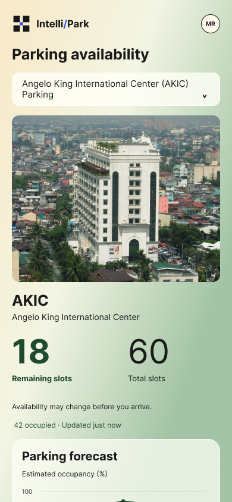

Real-time parking information
View facility capacity, recorded occupancy, and available spaces in one place. Validated QR entry and exit transactions update the parking count.
Meet IntelliPark—a university parking platform designed to bring real-time availability, occupancy forecasts, and campus advisories into one connected experience.
Without timely parking information, campus users have little visibility into where spaces are available or how busy a facility might become.
IntelliPark connects campus users and administrators through clearer, more actionable parking information.
View a facility’s available spaces, recorded occupancy, and total capacity at a glance.

View facility capacity, recorded occupancy, and available spaces in one place. Validated QR entry and exit transactions update the parking count.
See a facility’s expected occupancy percentage for a future time. Forecasts are designed to help users anticipate busy periods, where sufficient historical data is available.
Stay informed through academic calendar information, campus event advisories, and relevant parking notifications.
Bring facility configuration, registration approvals, parking records, and utilization reports together in a dedicated administrative web app.
Recorded availability helps you understand the present. IntelliPark’s planned forecast model will estimate hourly parking occupancy to support decisions before the next trip.
Interactive concept · illustrative data, not model output. Forecasting is planned and subject to data availability and evaluation.
Higher demand
around mid-morning.
Availability reflects validated transactions. Forecasts are estimates and do not reserve a parking space.
View current recorded availability and, when available, future occupancy estimates.
Create a single-use entry or exit QR code linked to the selected parking facility.
An authorized Facility Guard scans the code, and the system validates the transaction.
A successful entry or exit updates the facility’s recorded occupancy.
Accessible parking information to support more informed arrival decisions.
Centralized visibility into facilities, accounts, transactions, and parking utilization to support operational planning.
One connected platform, with access based on each person’s responsibilities.
IntelliPark is an Information Systems capstone project developed at De La Salle–College of Saint Benilde, using the institution’s parking environment as its initial setting for design and evaluation.
The proposed platform combines QR-based occupancy monitoring with historical parking analysis and campus information. Its approach uses mobile devices for transaction recording, without requiring dedicated parking sensors or cameras.
For forecasting, the research will compare Random Forest, XGBoost, and CatBoost against historical-average predictions. Earlier records will support model training, while later records will help assess forecast accuracy.
Participated in the researchers’ preliminary study across universities in Metro Manila.
Agreed that real-time parking availability would help them make better parking decisions.
Was a reported parking search range, with some respondents spending more than 20 minutes during peak academic hours.
Our goal: Turn parking records into useful information that supports arrival planning and institutional decisions.
These findings establish the need for IntelliPark. System performance and user impact will be evaluated during implementation.
Take a guided look at the proposed mobile experience, QR-based parking workflow, and administrative platform—and explore their value for university parking operations.